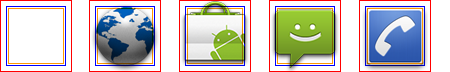
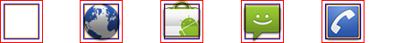
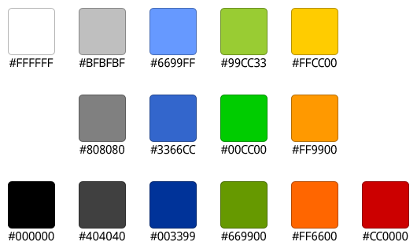
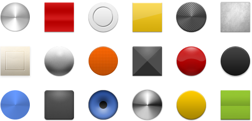
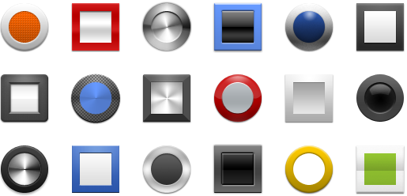
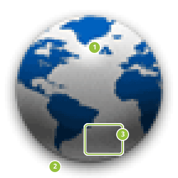
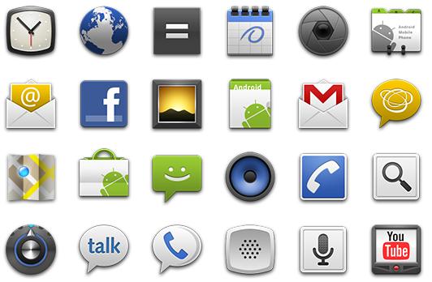
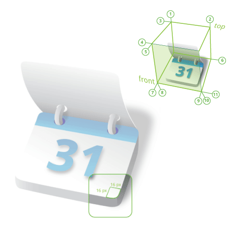

Warning: This document describes obsolete guidelines for creating launcher icons. Follow the latest launcher icon guidelines instead.
A Launcher icon is a graphic that represents your application on the device's Home screen and in the Launcher window.
The user opens the Launcher by touching the icon at the bottom of the Home screen. The Launcher opens and exposes the icons for all of the installed applications. The user selects an application and opens it by touching the Launcher icon or by means of any hardware navigation controls available, such as a trackball or d-pad.
As described in Providing Density-Specific Icon Sets, you should create separate icons for low-, medium-, and high-density screens. This ensures that your icons will display properly across the range of devices on which your application can be installed. See Tips for Designers for suggestions on how to work with multiple sets of icons.
Application Icons on Google Play
If you are publishing your application on Google Play, you will also need to provide a 512x512 pixel, high-resolution application icon in the developer console at upload-time. This icon will be used in various locations on Google Play and does not replace your launcher icon.
For tips and recommendations on creating high-resolution launcher icons that can easily be scaled up to 512x512, see Tips for Designers.
For information and specifications about high-resolution application icons on Google Play, see the following article:
Graphic Assets for your Application (Google Play Help) »
Android 2.0 and Later
Starting with Android 2.0, launcher icons should be front-facing, instead of at a three-quarter perspective. The following guidelines describe how to design launcher icons for Android 2.0 (API Level 5) and later.
Style
The launcher icons that you create should follow the general style principles below. The guidelines aren't meant to restrict what you can do with your icons, but rather they are meant to emphasize the common approaches that your icons can share with others on the device. Figure 1, at right, provides examples.
Figure 1. Example launcher icons for Android 2.0 and greater.
Clean and contemporary:
- Launcher icons should be modern and sometimes quirky; they should not appear aged or ragged. You should avoid overused symbolic metaphors whenever possible.
Simple and iconic:
- Android Launcher icons are caricatural in nature; your icons should be highly simplified and exaggerated, so that they are appropriate for use at small sizes. Your icons should not be overly complicated.
- Try featuring a single part of an application as a symbolic representation of the whole (for example, the Music icon features a speaker).
- Consider using natural outlines and shapes, both geometric and organic, with a realistic (but never photorealistic) rendering.
- Your icons should not present a cropped view of a larger image.
Tactile and textured:
- Icons should feature non-glossy, textured material. See Materials and colors, below, for more information.
Forward-facing and top-lit:
- New for Android 2.0 and later platforms: Android Launcher icons should be forward-facing, with very little perspective, and they should be top-lit.
Note: Android applies separate text labels using the application name when displaying launcher icons, so you should avoid embedding text in your icon and instead focus on designing a distinct and memorable icon.
Size and positioning
Launcher icons should use a variety of shapes and forms that are scaled and positioned inside the asset to create consistent visual weight with other icons.
Figure 2 illustrates various ways of positioning the icon inside the asset. You should size the icons smaller than the actual bounds of the asset to create a consistent visual weight and to allow for shadows. If your icon is square or nearly square, it should be scaled even smaller.
In order to indicate the recommended size for the icon, each example in Figure 2 includes three different guide rectangles:
- The red box is the bounding box for the full asset.
- The blue box is the recommended bounding box for the actual icon. The icon box is sized smaller than the full asset box so that there is space to include shadows and allow for special icon treatments.
- The orange box is the recommended bounding box for the actual icon when the content is square. The box for square icons is smaller than that for other icons to establish a consistent visual weight across the two types.
|
 |
|
 |
|
|
|
Figure 2. Launcher icon sizing and positioning inside the bounds of the icon asset. |
Materials and colors
Launcher icons should make use of tactile, top-lit, textured materials. Even if your icon is just a simple shape, you should try to render in a way that makes it appear to be sculpted from some real-world material.
Android launcher icons usually consist of a smaller shape within a larger base shape and combine one neutral and one primary color. Icons may use a combination of neutral colors but should maintain a fairly high level of contrast. Icons should not use more than one primary color per icon, if possible.
Launcher icons should use a limited color palette that includes a range of neutral and primary colors. The icons should not be over-saturated.
The recommended color palette to use for Launcher icons is shown in Figure 3. You can use elements of the palette for both the base color and the highlight color. You can use the colors of the palette in conjunction with a white-to-black vertical linear gradient overlay. This creates the impression that the icon is lit from above and keeps the color less saturated.
Figure 3. Recommended color palette for icons.
When you combine the materials in Figure 4 with a color highlight from the
recommended palette above, you can create materials combinations such as those
shown in Figure 5. To get you started, the
Icon Templates Pack
includes a Photoshop file (ic_launcher_template/example_materials.psd)
that provides all of the default materials, colors, and gradients.
|

Figure 4. Example materials that you can use to create your icons. |

Figure 5. Examples of materials combined with base and highlight colors from the recommended palette. |
Effects
Launcher icons are flat and the perspective is straight-on, rather than at an angle. A drop shadow is used to create a sense of depth. Launcher icons can use varying textures and lighting effects, but must be lit directly from above (straight down).
In order to maintain consistency, all launcher icons should use the same drop shadow effect, as shown in Figure 6.
|  |
Figure 6. Style, light and effects for launcher icons. Note: all pixel dimensions are for medium density and should be scaled appropriately for other densities.
|
Do's and don'ts
Below are some "do and don't" examples to consider when creating icons for your application.
Android Launcher icons are...
|
Android Launcher icons are not...
|
Figure 7. Side-by-side examples of "do's and don'ts" for Android launcher icons.
Example icons
Shown below are examples of high-density launcher icons used by Android applications. The icons are provided for your reference only — please do not reuse these icons in your applications..
Android 1.6 and earlier
The following guidelines describe how to design launcher icons for Android 1.6 (API Level 4) and earlier. Launcher icons for Android 1.6 and below are simplified 3D icons with a fixed perspective. The required perspective is shown in Figure 8.
Structure
- The base of a launcher icon can face either the top view or the front view.
- The majority of a launcher icon’s surface should be created using the launcher icon color palette. To add emphasis, use one or more bright accent colors to highlight specific characteristics.
- All launcher icons must be created with rounded corners to make them look friendly and simple—as shown in Figure 8.
- All dimensions specified are based on a 250x250 pixel artboard size in a vector graphics editor like Adobe Illustrator, where the icon fits within the artboard boundaries.
- Final art must be scaled down and exported as a transparent PNG file using a raster image editor such as Adobe Photoshop. Do not include a background color.
- Templates for creating icons in Adobe Photoshop are available in the Icon Templates Pack.
|  |
Figure 8. Rounded corners and perspective angles for launcher icons (90° is vertical).
|
Light, effects, and shadows
Launcher icons are simplified 3D icons using light and shadows for definition. A light source is placed slightly to the left in front of the icon, and therefore the shadow expands to the right and back.
|
Figure 9. Light, effects, and shadows for launcher icons.
|
Launcher icon color palette
|
Step by step
|